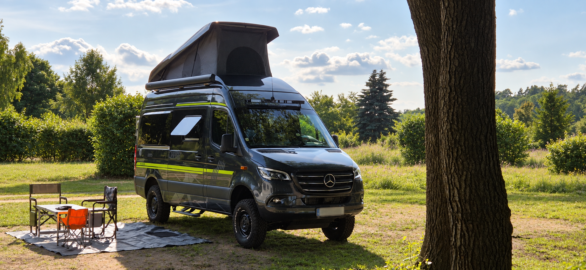
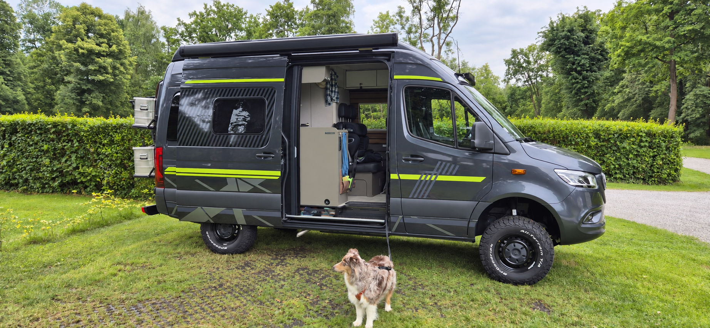

Lithium-Energie
Smart Battery System mit 95-W-Solarpanel und 1.600-VA-Wechselrichter.
VANVENTURE · FAHRZEUGPROFIL
Modelljahr 2025. Ein kompakter Allrad-Camper, konsequent auf lange, unabhängige Etappen aufgebaut.
DAS FAHRZEUG
Die Daten zeigen unser tatsächlich freigegebenes Setup — nicht eine Wunschliste.

AUTARK UNTERWEGS
Smart Battery System mit 95-W-Solarpanel und 1.600-VA-Wechselrichter.
85 l Abwasser. Wasser für längere Etappen unabhängig vom nächsten Campingplatz.
Mit 10-l-Boiler, Höhenkit und Winterpaket.
Kompressorkühlschrank mit 6,5-l-Gefrierfach, Kompaktbad und Aufstelldach.
CROSSOVER-SETUP
INDIVIDUELLER AUSBAU
KITT
Overland Equipment
H32 Design
HYMER
